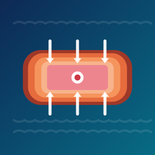

Heatpath
What does Heatpath do?
Heatpath estimates sous vide cooking times. From the food type, its shape and thickness, its starting temperature (fridge, frozen or another value) and the bath temperature, it calculates two separate numbers: the time to core temperature and the pasteurization hold. It does not connect to any cooking device. The core is free; one optional one-time purchase adds more. There is no subscription, account or advertising.
Important: estimates, not a guarantee
Heatpath gives estimates for guidance. It is not a food-safety guarantee. Follow the guidance of your local food-safety authority. Pregnant people, young children, older adults and anyone with a weakened immune system should follow official cooking temperatures. Use a thermometer when in doubt.
The two numbers
- Time to core temperature: when the model expects the center of the piece to be within 0.5 °C (0.9 °F) of the bath. It comes from the heat equation for a slab, cylinder or sphere solved on your device, with conservative food properties and a frozen start that includes thawing.
- Pasteurization hold: extra time at temperature for a target reduction of Salmonella or Listeria at the center (meat 6.5-log Salmonella and 6-log Listeria, poultry 7-log Salmonella and 6-log Listeria, fish 6-log Listeria). It assumes the center sits 0.5 °C under the bath and ignores the reduction built up while heating, so it errs long.
- Below a bath of 55 °C (131 °F) no hold is calculated: the food is not pasteurized. Serve it right away, keep the total time under 4 hours and do not serve it to vulnerable people.
- If you switch off Include pasteurization hold, the timer covers the core time only and the food is not pasteurized; the app says so.
- Fish cooked below official temperatures should be fish that was frozen to kill parasites. Follow your local guidance.
- Eggs and vegetables have no pasteurization calculation. Heatpath covers cook-and-serve only, not chilling and storing cooked food.
- The formulas, parameters and literature sources are listed in the app under How Heatpath calculates.
How to use it
- Calculate: choose a food and doneness, or set the bath temperature. Pick the shape and measure where the piece is thickest, across its smallest dimension (a steak's thickness, not its length; diameter for a cylinder or sphere). If unsure, choose Slab: it gives the longest time.
- Start timer now when the bath is at temperature and the food goes in, or Plan: ready at… to get a reminder when to put the food in. A planned timer waits until you tap Food is in the bath, so a late start never ends early. Swipe a running timer to Restart from now.
- Timers: shows heating, pasteurization hold and ready. Heatpath asks for notification permission only when you start your first timer. If notifications are off, timers still run in the app but cannot alert you when it is closed.
- Log: write down what you cooked, how long and how it turned out, and export it as CSV (free).
- Settings: °C or °F, mm or inches, Restore purchases.
Free and Pro
- Free: the calculator with time to core and pasteurization hold, the temperature chart, one timer at a time, the cook log and its CSV export.
- Heatpath Pro (one-time, non-consumable in-app purchase): several timers at once planned to be ready together, custom foods and pasteurization detail charts. No subscription.
- Your cook log, running timers and saved custom foods always keep working, with or without Pro.
- Restore: on the purchase screen or Settings › Restore purchases, signed in with the same Apple Account. Refunds are handled by Apple at reportaproblem.apple.com.
Good to know
- Everything is saved on this device only. Deleting the app deletes it.
- iPhone in portrait; iPad in any orientation. English, Korean, Japanese, German, French, Spanish, Brazilian Portuguese and Italian.
Contact
한국어
Heatpath는 수비드 조리 시간을 계산하는 앱입니다. 재료 종류, 모양과 두께, 시작 온도(냉장·냉동·직접 입력), 수조 온도로 중심 온도까지 걸리는 시간과 저온살균 유지 시간을 따로 계산합니다. 조리 기기와 연결하지 않습니다. 기본 기능은 무료이고 선택형 한 번 구입으로 기능이 늘어납니다. 구독·계정·광고는 없습니다.
- 참고용 예상치: 식품 안전을 보장하지 않습니다. 거주 지역 식품안전 당국의 지침을 따르세요. 임신부, 어린이, 고령자, 면역력이 약한 분은 공식 조리 온도를 따라야 합니다. 확실하지 않으면 온도계를 쓰세요.
- 중심 온도까지: 기기에서 판형·원통형·구형의 열전도 방정식을 풀어, 중심이 수조와 0.5 °C 이내가 되는 시점을 계산합니다. 재료 물성은 보수적으로 잡았고 냉동에서 시작하면 해동 시간도 포함합니다.
- 저온살균 유지 시간: 중심에서 살모넬라·리스테리아를 목표만큼 줄이기 위해 더 두는 시간입니다(육류 살모넬라 6.5로그·리스테리아 6로그, 가금류 살모넬라 7로그·리스테리아 6로그, 생선 리스테리아 6로그). 중심이 수조보다 0.5 °C 낮다고 보고 가열 중 감소량은 빼므로 길게 나옵니다.
- 수조 55 °C 미만에서는 저온살균 유지 시간을 계산하지 않습니다. 저온살균되지 않은 음식이니 바로 먹고 전체 시간을 4시간 미만으로 지키며 취약한 분에게는 내지 마세요. ‘저온살균 유지 시간 포함’을 끄면 저온살균되지 않았다고 표시합니다. 공식 온도보다 낮게 익히는 생선은 기생충을 없애기 위해 냉동했던 생선을 쓰세요. 달걀·채소는 저온살균 계산을 하지 않고, 조리 후 식혀 보관하는 경우는 다루지 않습니다.
- 사용법: 재료와 익힘 정도를 고르고 가장 두꺼운 곳에서 가장 짧은 방향으로 잽니다(스테이크는 길이가 아니라 두께, 원통형·구형은 지름, 모르면 판형). 수조가 온도에 닿고 재료를 넣을 때 ‘지금 타이머 시작’, 또는 ‘완성 시각 계획…’으로 넣을 시각 알림을 받습니다. 계획한 타이머는 ‘재료를 넣었어요’를 누를 때부터 시간을 셉니다. 알림 권한은 첫 타이머를 시작할 때만 묻습니다.
- 무료: 계산기(중심 시간·저온살균 유지 시간·온도 그래프), 타이머 한 번에 하나, 조리 기록과 CSV 내보내기. Heatpath Pro(한 번 구입, 비소모성): 여러 타이머 동시 진행과 동시 완성 계획, 나만의 재료, 저온살균 상세 그래프. 조리 기록·진행 중 타이머·저장한 재료는 구입 여부와 관계없이 언제나 쓸 수 있습니다.
- 복원: 구입 화면이나 설정 › ‘구입 복원’. 환불은 Apple(reportaproblem.apple.com)에서 처리합니다. 모든 데이터는 이 기기에만 저장되고 앱을 지우면 함께 지워집니다.